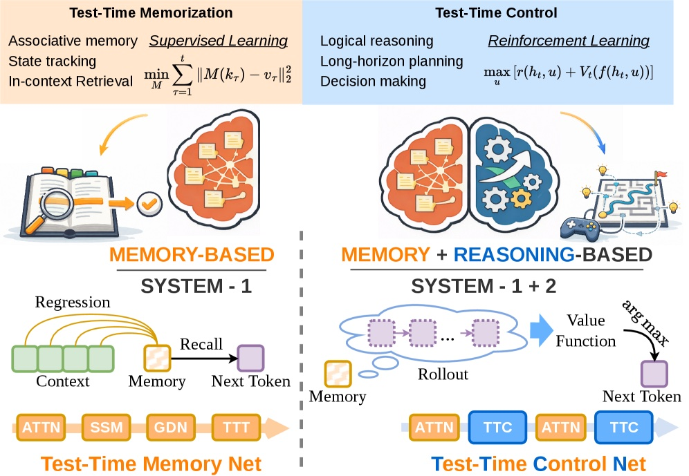
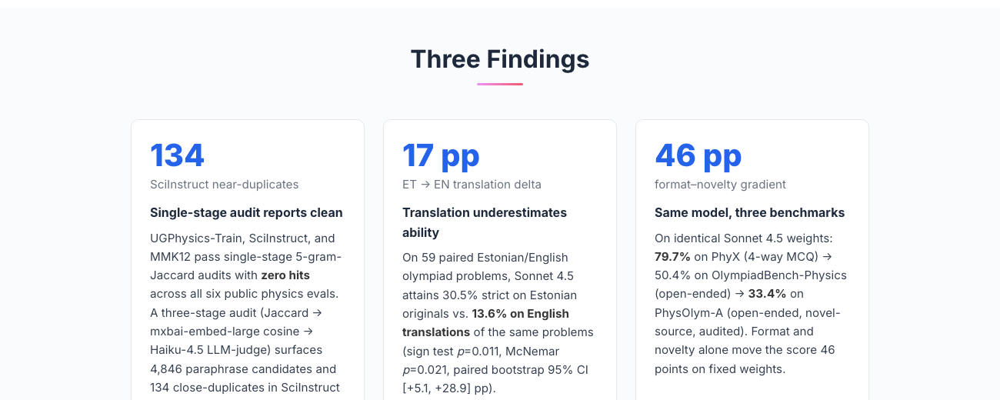
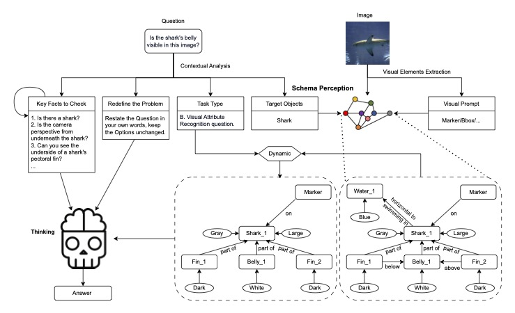

Shan Yang
Post-Training · Multimodal RL Reasoning · Agentic Systems
I build the post-training stack end to end — verifiable-reward environments, rollout infrastructure, and RL recipes that survive contact with the real distribution. On Physics-R1 that meant taking Qwen3-VL-8B-Thinking from 8.0 to 26.3 on a held-out olympiad benchmark — +18.3 points, and +15.7 on PhysReason — in roughly 360 H200-GPU-hours across three seeds. I'm now doing the same for multi-turn reasoning, where the reward is harder to specify and much easier to hack.
Latest

Physics-R1: An Audited Olympiad Corpus and Recipe for Visual Physics Reasoning
Multimodal physics benchmarks are contaminated in ways nobody had measured: a three-stage audit — 5-gram Jaccard, then embedding similarity, then an LLM judge — surfaced 134 near-duplicates and 4,846 paraphrase candidates in SciInstruct alone, alongside translation drift and MCQ saturation. Which is why we built ours from scratch. PhysCorp-A is 6,432 records audited down from a 14,294-record pool, with full provenance and license audit; PhysOlym-A is 500 held-out olympiad problems, 99.8% novel-source. The GSPO+DAPO recipe is worth +18.3 points on PhysOlym-A and +15.7 on PhysReason at 8B. Corpus, benchmark, training and reward code all open.
Post-Training Systems
Algorithms
SFT, DPO, RLHF, GRPO, GSPO, DAPO. Physics-R1 settled on GSPO+DAPO at 8B; the multi-turn follow-up runs decoupled advantages over a two-turn episode.
Stack
verl 0.6.1 on FSDP, vLLM for rollout serving, PyTorch and DeepSpeed underneath. Physics-R1 trained in roughly 360 H200-GPU-hours over three seeds; prior production work at 10B+ parameters.
Reward & eval infrastructure
Rule-based verifier on boxed answers, composed with an LLM judge and unit-consistency checks, each component logged separately so it's visible which term is actually driving the gradient. Three-stage contamination audit — lexical, embedding, then judge — gates every training corpus.
In Progress
Physics-R2 — multi-turn RL
Denser reward for multimodal physics reasoning. Under submission.
Experience
Adobe Foundry — Staff Applied Scientist
2026–nowPost-training custom generative foundation models for enterprise customers — supervised fine-tuning, with data curation as the primary lever. Own the evaluation protocols, graders, and preference-data pipelines that gate customer-model quality.
Amazon — Senior Applied Scientist, Tech Lead
2021–2026Built and shipped Amazon's large-scale multimodal video search from the ground up — video, text, image and structured fusion — then applied RL post-training to the search models. Led Schema-of-Thought research on multimodal LLM robustness, cutting hallucination 28%. Later led GenAI Live Action Studio: autoregressive diffusion and training infrastructure for 10B+ parameter video generation.
Google DeepMind — Senior Research Software Engineer
2017–2021Multimodal modeling. AIST++ / AI Choreographer (ICCV 2021), Attention Bottlenecks for Multimodal Fusion (NeurIPS 2021).
UNC-Chapel Hill — PhD, Computer Science
2012–2017Learning physical parameters from video, with Prof. Ming C. Lin.
Selected Publications

VLAP: Efficient Video-Language Alignment via Frame Prompting and Distilling for Video Question Answering
ECCV 2024


Show all publications
Earlier work, 2012–2021 — physical parameter estimation from observation. Cloth and tissue elasticity recovered from video and single images (ICCV 2017, TOG 2018, TVCG 2016, ICRA 2016, MICCAI 2016). The same question I work on now, before it was tractable in a language model: how does a model learn physics it was never told?


MeSa: Masked, Geometric, and Supervised Pre-training for Monocular Depth Estimation
NeurIPS 2023 Workshop SSLTheoryPractice



Optical Mouse: 3D Mouse Pose From Single-View Video
CVPR 2021 (CV4Animal Workshop)


Real-time Simulation for Buried Suture
CARS 2012
Open Source & Releases
Dataset · Hugging Face
Physics-R1 Corpus
2,434-record audited training corpus for visual physics reasoning, with provenance and license audit.
Benchmark · Hugging Face
PhysOlym-A
500-question novel-source olympiad benchmark for evaluating visual physics reasoning in VLMs.
Code · GitHub
AIST++ Dataset API
Loaders and tooling for the AIST++ 3D dance dataset (from AI Choreographer, ICCV 2021).
Agentic System
Lumi Research Manager
Seven specialist agents orchestrated over LangGraph across a staged research pipeline, dispatched in natural language rather than through a fixed DAG. Agents run as Claude CLI subprocesses with MCP tool access, share state through Prisma/SQLite, hold multi-round discussions logged per turn, and sync progress to Notion.